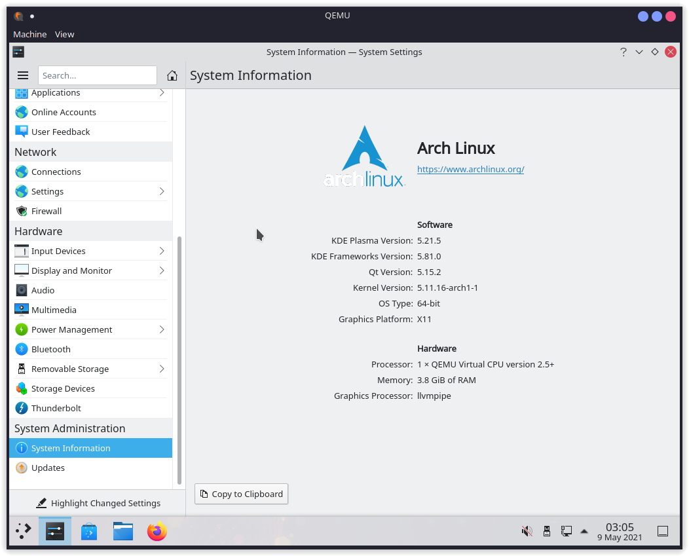

Alice's Arch Linux Live DVD
A live DVD of Arch Linux complete with KDE Plasma, utilities useful for system recovery, and useful applications to use directly from the DVD.
Useful for system recovery, Arch installations, Debian installations (with debootstrap and chroot, figure it out), Gentoo installations, and more. Inspired by Gentoo live DVDs, which are no longer updated.

You can download it from my keybase
Download iso
Source Code
The username and password are:
Username: user
Password: password
Currently the Live DVD includes:
abiword
adobe-source-code-pro-fonts
alacritty
alsa-utils
amd-ucode
android-tools
archinstall
arch-install-scripts
aria2
ark
avahi
b43-fwcutter
base
base-devel
bind-tools
binwalk
brltty
broadcom-wl
btrfs-progs
cabextract
cdrtools
chntpw
chromium
cifs-utils
clang
clonezilla
cloud-init
cmake
colord
colordiff
crda
debian-archive-keyring
darkhttpd
ddrescue
debootstrap
dhclient
dhcpcd
diffutils
dmidecode
dmraid
dnsmasq
dolphin
dosfstools
dstat
dvd+rw-tools
e2fsprogs
edk2-shell
efibootmgr
efitools
efivar
elinks
emacs
espeakup
ethtool
exfatprogs
ext4magic
f2fs-tools
fatresize
filelight
firefox
flashrom
foremost
fsarchiver
gftp
gimp
git
gnome-disk-utility
gnu-netcat
gpart
gparted
gpm
gptfdisk
grml-zsh-config
grsync
grub
gvfs
hdparm
htop
hwinfo
inetutils
intel-ucode
ipw2100-fw
ipw2200-fw
irssi
iwd
jfsutils
k3b
kate
kdf
kile
kitty-terminfo
kmon
konsole
krita
ksysguard
lftp
libreoffice-fresh
links
linux
linux-atm
linux-firmware
livecd-sounds
lsscsi
lvm2
lynx
man-db
man-pages
mc
mdadm
meld
memtest86+
mkinitcpio
mkinitcpio-archiso
mkinitcpio-nfs-utils
modemmanager
mtools
nano
nbd
ndisc6
neovim
netdata
networkmanager
networkmanager-openvpn
networkmanager-vpnc
nfsidmap
nfs-utils
nilfs-utils
nmap
nm-connection-editor
notepadqq
npth
nspr
nss
ntfs-3g
ntp
nvme-cli
okteta
openconnect
openssh
openvpn
p7zip
partclone
parted
partimage
plasma-meta
ppp
pptpclient
pulseaudio
qemu
ranger
rclone
reflector
reiserfsprogs
rp-pppoe
rsync
rxvt-unicode-terminfo
samba
sdparm
sg3_utils
sl
smartmontools
smbclient
sof-firmware
squashfs-tools
sshfs
subversion
sudo
syslinux
sysstat
systemd-resolvconf
tcpdump
terminus-font
termite-terminfo
testdisk
texmaker
tmux
udevil
udftools
usb_modeswitch
usbmuxd
usbutils
usbview
vifm
vim
vpnc
vsftpd
w3m
wget
wireguard-tools
wireless-regdb
wireless_tools
wpa_supplicant
wvdial
xfsprogs
xl2tpd
xorg
youtube-dl
zsh